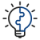

인사팀은 회사의 경영방침 및 비전을 달성하기 위한 우수인재의 확보, 인적자원 역량 강화, 건설적인 기업문화
육성의 업무를 수행합니다.
세부 업무로는 인력운영계획 수립, 우수인재의 채용 및 육성, 노무관리, 성과에 근거한 공정한 평가 및 보상시스템
구축/운영, 복리후생 제도 기획/운영 등이 있습니다.
필요역량
인사업무 담당자는 사람에 대한 관심과 애정을 가지고 대내외 관계자들과 원활한 커뮤니케이션이 가능한 의사소통
능력이 필요합니다. 또한 인사 관련 이슈를 파악하고 분석하여 개선할 수 있는 분석력 및 기획력은 물론 법령을 해석하고 이해할 수 있는 능력이 요구됩니다.
관련전공
인문/사회/상경계열
근무지
본사/온산제련소
직무인터뷰
고현성 사원
고려아연 온산 인사팀
간단한 자기소개 부탁드립니다.
안녕하세요, 저는 2018년도에 입사한 온산 인사팀 고현성입니다.
주로 어떤 업무를 하나요?
인사팀은 인력을 채용하거나 적시에 배치·교육하는 등 사내 인력 관리를 담당하고 있습니다.
글로벌 비철금속 제련회사인 우리 회사를 이끌어갈 적합한 인재를 채용해 적시에 배치하고,
직무나 기타 소양을 개발하는 데에 필요한 교육을 제공함으로써 임직원의 성장을 돕고 있습니다.
또한 임직원에 대해 공정하게 평가하고 보상하기 위한 제도들을 개발·운영하고, 올바른 기업문화를 만들기 위해 노력합니다.
노동조합과 함께 단체교섭, 임금 교섭, 노사협의회 등을 통해 노사 관계 전반에 관한 업무를 수행하기도 합니다. 급여를 지급하는 업무도 인사팀에서 담당하고 있습니다.
직무를 수행하기 위해 어떤 역량이 필요하나요?
가장 중요한 건 팀워크입니다. 인사는 본인 업무라도 혼자서 처리하지 못하는 경우가 더 많습니다.
물론 뛰어난 개인의 역량도 중요하지만, 일을 잘 마무리하려면 팀 구성원이나 다른 부서와의 협업이 꼭 필요하다는 의미인데요.
각 분야별로 업무가 구분되지만, 막상 실무를 하다 보면 실타래처럼 얽혀 있다는 느낌을 많이 받습니다.
내업무와 크게 관련 없어 보이는 외부 변화나 조직 내 이슈도 생각보다 더 중대한 영향을 미칠 때가 있고요.
따라서 서로의 업무나 이슈 등을 사전에 공유하고 협업하는 자세가 필요합니다. 인사 업무를 잘하기 위해서는 항상 디테일에 신경 써야 합니다. 업무 특성상 승진, 부서 이동, 개인 신상, 고과 등 조직 구성원의 민감한 정보를 다룰 일이많고, 퇴직금 정산처럼 꼼꼼한 계산 능력을 요구할 때가 있습니다. 이런 경우, 작은 실수가 돌이키기 어려운 큰 문제를 야기할 수 있으니 업무상 빈틈이 생기지 않도록 꼼꼼하게 일처리를 할 수 있어야 합니다.
직무의 매력적인 점 / 어려운 점이 있다면요?
총무 직무는 내부 구성원에게 지원하는 서비스와 직결되는 부분이 많은 만큼 그 과정에서 보람을 느낄 때가 많습니다.
그게 가장 큰 매력이 아닐까 생각합니다. 다만, 내부·외부적으로는 동시다발적으로 발생하는 일들이 많아 업무 시 늘 긴장을 놓을 수가 없지만 꾸준한 노력과 경험으로 극복할 수 있는 부분이라고 생각합니다.